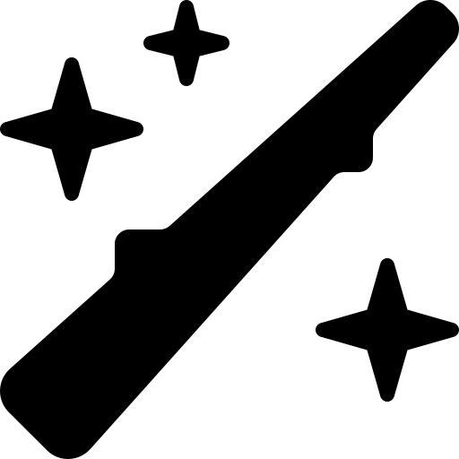

| Poções | |||||||
|---|---|---|---|---|---|---|---|

PolissucoA poção é utilizada para adiquirir a aparência de outra pessoa, por um tempo determinado.
|
MáximaEssa poção é utilizada para aumentar o dano dos feitiços lançados nos inimigos, por um tempo determinado.
|
InvisibilidadeAo beber essa poção, ficará invisível por um tempo determinado, e a menos que o efeito passe, ou você faça barulho, ninguém saberá onde você está.
|
WiggenweldUtilizada para recuperar a vida e saúde, após uma batalha. Não deixe de usar, se não
quiser sofrer a sua morte.
|
||||
| Feitiços | ||||||
|---|---|---|---|---|---|---|
 Petrifico TotalusUsado para paralisar o oponente. Desta forma, o oponente fica em estado petrificado, porém consegue ouvir e ver o que você está falando. Use este feitiço, para impedir que o oponente faça qualquer movimento ofensivo a você, para assim o dominar. |
Aresto MomentumFeitiço de lentidão. Com ele é possível atrasar os movimentos do seu oponente, te dando vantagem sobre os próximos movimentos. Use-o para retardar os movimentos de seu oponente, e garantir vantagem sobre ele. |
AccioEsse feitiço, permite que quem o conjura, traga pessoas ou objeto para próximo de quem o lançou. Use-o sempre que precisar de um objeto que estiver fugindo de você, ou quando a preguiça dominar o seu corpo, para trazer o objeto para perto de si. Este feitiço não causará dano a ninguém. |
Avada-KedavraUm dos feitiços proibidos. Também conhecido como a maldição da morte. Ao lançar ele ao seu oponente, o mata instantaneamente, não permitindo nenhuma ação ao oponente. Por ser uma maldição, este feitiço é terminantemente proibido, e quem o usar, poderá ir direto a prisão. |
|||
| Casas | ||||||
|---|---|---|---|---|---|---|
GrifnoriaA casa dos valentes. Nela todos os corajosos e todos aqueles que procuram a coragem se encontram. São destemidos, sempre a procura de novas aventuras e são bem representados. Fundada por Godric Gryffindor, o símbolo dessa casa é o leão e a cor é a vermelha. |
SonserinaDestinada a todos os que ambicionam o novo e o impossível. Se você é um aluno dessa casa, provavelmente se encontra em meio ao caos e confusão. Fundada por Salazar Slytherin, o símbolo dessa casa é a cobra e a cor é a verde. |

CorvinalNela habitam os inteligentes e estudiosos. Se você é um dos alunos da corvinal, é inteligente ou determinado, sempre em busca do conhecimento e sempre dá um jeito de pôr em prática tudo o que aprendeu. Fundada por Rowena Revenclaw, o símbolo dessa casa é o corvo e a cor é o azul. |
Lufa-LufaA casa dos leais e justos. Por sempre buscarem a justiça e a lealdade, eles nunca fogem de brigas para salvar os injustiçados e amigos. Fundada por Helga Hufflepuff, o símbolo dessa casa é o furão e a cor é amarela. |
|||